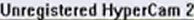
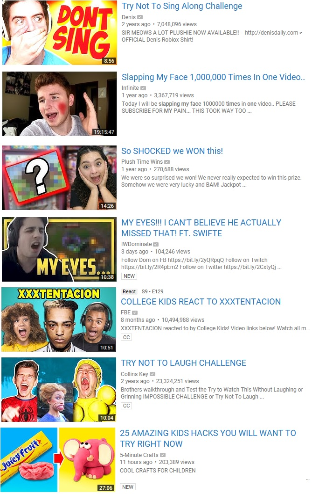

The Internet is Serious Business!
Home > Computers, Technology, and Internet > YouTube > Reflections on YouTube
I have been following the evolution of YouTube for over 14 years now. My conclusion is that the site has been going downhill ever since the early 2010s, and I say without hesitation that, if given the choice, I would go back to old YouTube in an instant.
I registered my first YouTube account in March 2007; prior to that, I had been watching videos regularly on the site without an account for a little while, though I most likely discovered it after the beginning of 2007. From then until the beginning of September 2009 (the beginning of the 2009–2010 school year), I would log in to my YouTube account almost daily to watch, rate, favorite, and comment on videos; make new friends and interact with existing ones; and even upload some of my own videos to the site. I took a break from my YouTube account—but not from the site itself, as I would still watch videos—during the 2009–2010 school year, and then returned to using my YouTube account daily for the earlier part of the summer of 2010, but at that point I grew bored of my account, and closed it before the end of that very same summer.
Since then, I have not registered any new YouTube accounts, and even though I have (like probably many other folks) continued to watch videos on YouTube regularly, I have never returned to using an account on the site like I did in the late 2000s. Thus, while I have been using YouTube regularly since the beginning of 2007, I have not participated in the YouTube community by means of an account since the summer of 2010.
It will probably not be surprising to you, then, when I say that I consider old YouTube to be the period from the founding of the site in 2005 to 2010. This was the golden era of the site (excluding perhaps 2005, when it was very small and obscure), back when there was a real sense of community. In those days I was always excited to log in to my YouTube account and see what new comments or videos my friends had put up—the site was fun to use, and there was definitely more to do on there than just watch videos. I logged in to my account nearly every day back then, and though it most likely varied throughout the years, on a typical day I spent around half an hour to an hour on the site, a significant portion of which was used for activities other than watching videos. YouTube was among the only two non-video-gaming online communities that I spent a great deal of time in (the other one is 4chan); I have many warm and fond memories of using the site in the late 2000s, and it saddens me every day when I see how far it has strayed from how it was in those years.
Some folks will think it strange, but I really do miss the days when nearly every video on the site was in 4:3, or 240p/360p, or watermarked with , or had its audio removed and replaced with that 009 Sound System song (thanks, WMG!), or was some sort of Notepad tutorial, or was edited with the old Windows XP version of Windows Movie Maker, or was a Naruto AMV with Linkin Park music, or was a clip from a movie or TV show (or even a full episode) uploaded without any editing to escape the copyright detectors, etc. YouTube was a much smaller place in those days, and it had a unique charm that I fear will never return.
One defining feature of old YouTube was the ability to customize user channels. YouTube was founded in 2005, back when Myspace was still dominant, and so the founders of the site thought it a good idea to try to mimic Myspace and its customizable user pages. Although I am unaware of their design during 2005, from 2006 to 2009, YouTube channels followed the same overall design, which nowadays is typically called Channel 1.0. Looking at the Internet Archive's Wayback Machine's captures of the smosh(1) channel on, for example, 9 February 2007, 12 June 2008, and 2 August 2009, you can see Channel 1.0 in its various stages, and although there were minor tweaks here and there over the years, the overall design remained the same.
Channel 1.0—without a doubt my favorite YouTube channel design—gave every user the ability to customize the profile picture, background color, background image, font, and color scheme, as well as the ability to re-arrange the content boxes. This gave every user much freedom to individualize their channel and express their personality through it, with the result being that, back then, every new channel you came across was an exciting surprise, as you could never guess how it would be customized by the owner.
Later on in 2009, YouTube introduced what is typically called Channel 2.0 today, a major re-design that was not well-received when it was first rolled out, but in general still allowed the same degree of customization as Channel 1.0; for examples, see the captures of the smosh channel on 3 December 2009, 3 November 2010, and 25 November 2011.
It was after this, though, that the channel designs went downhill. In 2012, YouTube forced all channels to switch over to the restrictive Cosmic Panda re-design (see the captures of the smosh channel on 9 February 2012 and 4 May 2013); besides the ability to change the profile picture and the background image/color, Cosmic Panda robbed us of the freedom to customize all other aspects of our channel. Even worse, in the summer the 2013 YouTube rolled out the truly bland and awful One Channel re-design, which only permits changing the profile picture and a banner image, and nothing else. Looking at both a capture of the smosh channel from 24 July 2013 and the live channel, you will see that One Channel is still being used today—all of YouTube has suffered under it for over seven and a half years now, and since the beginning of its reign YouTube channels have pretty much lost all sense of individuality.
It used to be fun and exciting to hang out on your channel or your friends' channels, reading the channel comments or the channel's description, poking around through the lists of friends, subscribers, and subscriptions, and all the while enjoying the personalization; it never got old to view yet another channel, because everybody's channels were, in general, quite different. Nowadays every channel uses the same plain white color scheme, has the exact same white background, uses the exact same font, and forces everybody into the exact same layout—there is no variety anymore, and the whole experience is hardly interesting. A mere profile picture and a single banner photo are certainly not enough customization, and with channels now being very uniform and offering essentially no personalization, one of the most enjoyable aspects of maintaining a YouTube account for me—and, I think, many others—has disappeared.
This is a significant loss for YouTube, but, in recent years, another issue just as big has surfaced.
For a long time my biggest complaint and criticism of YouTube's change over the years was the loss of channel customization. It is an issue which is readily apparent because channel re-designs are very major and very obvious changes, and the Internet Archive's Wayback Machine lets us take a peek back and reminisce about what channels once were. Perhaps less apparent is the increasing amount of monetization that has occurred in recent years, and the consequences that follow.
According to Wikipedia, video monetization was introduced to YouTube in May 2007, with the Partner Program. Although I am not familiar with the specific entry requirements for the Partner Program back then, I do know that, compared to today, the fraction of monetized channels was much, much smaller. They were very rare partly because the requirements to become a YouTube Partner and monetize your channel were much harder to achieve during the 2000s, and partly because, back then, the idea of monetizing your videos and thus making money (and even a living) from YouTube was not at all commonplace.
YouTube has grown tremendously since then, though, and the entry requirements for the Partner Program have either not been updated to keep pace with that growth, or (even worse) have been lowered over the years. According to the official YouTube Help page on the subject, one of the requirements is that the channel must have more than 1,000 subscribers—on old YouTube this was a significant amount that most channels could never hope to attain in any reasonable amount of time, but nowadays it is small potatoes. The fact that it's much easier now for somebody to monetize their channel means that many more people are doing so, and that, in turn, has led to the rise in recent years of an attitude that sees YouTube as nothing more than a place to upload monetized videos, collect monetized views, and make money.
It seems that more and more people today consider themselves YouTube content creators
, which brings to mind an image of a incredibly annoying cretin who only uploads videos with all caps, clickbait titles, each of which always begins with them nearly yelling HEY, WHAT'S UP, YOUTUBE!!!
towards the camera, and that always have thumbnails showing them surprised, with their mouth agape and their hands to their cheeks. If you have browsed YouTube in the past few years, you should know the kind of worthless videos I'm talking about:(2)

Such is one of the most obvious drawbacks to paying people money according to how many views their videos are able to get. It is very frustrating to see the site flooded with such contemptible garbage; it crowds out the stuff that the average users upload, the ones who choose not to monetize their videos and simply use the site for fun. Even the non-clickbait monetized videos are getting to be too much these days: they tend to be too polished and professional—too Hollywood—for YouTube, and belong more on television or in a movie theater.
There is nothing wrong with monetization, only mass monetization, the latter having become a problem on YouTube by the mid-2010s. Even I will admit that I enjoyed a handful of monetized videos and channels back in the day, and that monetization surely provided an incentive for those channels to upload interesting and high-quality videos for their subscribers to view. Those monetized videos, however, formed a very small fraction of all the videos on the site; the rest of them were, by and large, uploaded by non-monetized channels that were owned by everyday folks who didn't try to make money off of YouTube. There was an excellent balance in those days of monetized and more professional videos versus non-monetized and more amateur (in a good way) videos: the professional, monetized videos were spread out thinly amongst an overwhelming number of amateur, non-monetized ones, but mass monetization has definitely tipped the balance in favor of the former, and it becomes very tiring when we're presented mostly with the professional rather than the amateur videos on YouTube today, unlike on old YouTube, where it was the other way around. We already get enough of the polished and professional stuff on television and at the movies, so why shouldn't YouTube differentiate itself as the place filled mostly with the splendidly amateur videos, made by people like you and me?
The site is all about monetization these days. Around the same time that mass monetization emerged, YouTube also tweaked their algorithms for both the search bar results and the list of related videos, in both cases preferring monetized (and often clickbait) videos over non-monetized ones. Anybody who began using YouTube frequently before the mid-2010s will remember that, on old YouTube, setting the search bar to search for the videos most relevant to your search terms meant that, in fact, it presented you with the most relevant videos, regardless of monetization; the same can hardly be said of it these last handful of years, because other than searching for a specific video by title, the search bar will almost never list the most relevant videos first, only the most relevant monetized videos—anything not monetized is pushed down significantly in the search results, and most likely doomed to obscurity.
The list of related videos that is shown alongside every video on the site has been corrupted, too: for example, take a look first at this Internet Archive capture of this YouTube video of Scott Joplin's Maple Leaf Rag
, and notice how nearly all of the listed related videos concern either Scott Joplin or the Maple Leaf Rag
, a far cry from the live video's list of related
videos, which have far too many completely unrelated clickbait ones because, of course, such videos are monetized cash cows. This is only one example, but ever since the early 2010s I have seen it repeated countless times; it got particularly bad starting around 2014/2015, and since then it has worsened every year. The list of related videos, once a very useful tool for discovering other videos that were genuinely related to the one being watched, has nowadays become just another opportunity to push more clickbait crap down our throats.
Below are a few other changes that have occurred to YouTube over the years that have also contributed to making the site worse.
Old YouTube had a 5-star rating system, but in early 2010 this was changed to a simple like/dislike system, a decision which I have always believed to be completely idiotic; I will never understand why YouTube would deliberately reduce the number of options we have to rate a video with from five to two. I have heard that, in practice, most folks simply rated 1 star or 5 stars, and very few took advantage of the other three ratings, but if even one person rates 2, 3, or 4 stars, then the 5-star system is better than the like/dislike system, even if by a hair. In the worst case scenario, the 5-star system degenerates into the equivalent of a like/dislike system as everybody rates either 1 star or 5 stars; even then, the 5-star system is, at the very least, no worse than a like/dislike system, but it certainly has the potential to be better.
Perhaps YouTube has been caught up in the (ill-deserved) success of Facebook and was blindly imitating that site, or perhaps they think of us all as simpletons who can't handle more than the binary extremes of like/dislike—what else could explain such a stupid decision?
Video responses existed on YouTube as far back as I can remember, but they were removed from the site in 2013. For a long time, they were listed below the video being watched, and served as a good way to praise, criticize, or discuss that video. Though some clickbait abuse happened through it, in general it was a good feature that helped foster a sense of community on the site, as it offered us a much more powerful and flexible way than text comments to share our thoughts on a video. By removing it, YouTube removed yet another point of interaction for the site's community.
It used to be that nobody—not even monetized channels—could upload a custom thumbnail for their videos; instead, we had to select from three thumbnails that were auto-generated by YouTube, the first one being a snapshot of the video a quarter of the way through, the second being a snapshot halfway through, and the third being a snapshot three-quarters through. Although this system was not perfect, and at times a misleading thumbnail was generated purely by chance, in most cases it served its purpose of providing an accurate preview of the content of the video.
YouTube has not removed this system, but sometime in the 2010s (I am not sure when, exactly) it added the ability for monetized channels to set the video thumbnail to a custom image that they could select at will. This opened up all sorts of opportunities for deception, and although deliberately misleading video thumbnails had existed before,(3) this feature made it much easier to set the video thumbnail to something that doesn't reflect the actual content of the video, or is even related to the topic of the video at all, and is something those worthless clickbaiters have certainly taken advantage of (see the image above). The YouTube content creators
of today might consider custom thumbnails video marketing
, but I consider it trickery and dishonesty.
Anybody who used YouTube in the old days will recall that it used to be a glorious haven for piracy. Back then, it was very easy to find full TV episodes, non-monetized (and therefore advertisement-free) music and music videos, and even the occasional full movie on the site, along with a seemingly endless number of video clips taken from copyrighted sources. Pretty much everyone who uploaded something back in those days uploaded copyrighted material, but very few of us cared (or even knew) about copyright restrictions, so the site ended up being an excellent way for very large numbers of people to easily share, find, and watch copyrighted videos for free. Yarr, harr!
I still miss this state of affairs dearly. When Viacom whined and cried in 2007, that was the beginning of the end of the site's wildest days of piracy. Soon afterwards, WMG began muting videos with copyrighted music,(4) and YouTube began using Content ID to automatically remove copyrighted videos, but during the late 2000s, at least, it was still quite easy to upload copyrighted material undetected by merely flipping the video on its y-axis and shifting the audio up or down a semi-tone.
Copyright detection has gotten much better since then, though, and now all sorts of tricks are necessary to avoid the automatic copyright detectors; oftentimes the amount of editing of the video required to fool the detectors is so much that it makes the whole thing largely unwatchable. Even if a video with copyrighted content manages to make it onto YouTube, it's either taken off much quicker these days, or it's forcibly monetized and thereafter annoys every viewer with advertisements simply because it happened to use something like 15 seconds of audio from a copyrighted song. YouTube was forced to bend to the copyright Nazism of the big media companies, and, to the vast majority of average folks, it is no longer useful anymore as a massive repository of free TV shows, movies, music, and other clips.
All of the things I have discussed here (besides star ratings) have contributed to morphing YouTube from a video-sharing community to a mere video repository or something resembling television. Old YouTube felt much more personal, and was driven largely by the uploads and activity of its everyday, non-monetized users—that is, us, the masses—who were given much freedom in the customization of their channels, and who weren't screwed over like they are today by algorithms that by and large ignore their non-monetized videos. In those days, we made videos to greet our friends, or to call out and insult our enemies; we recorded ourselves doing something neat or interesting, and shared it with the world; we made AMVs and tributes to things we liked; we uploaded cool, funny, or entertaining clips we found from other parts of the Web (copyright be damned!); and, finally, we made and uploaded videos for fun, or maybe for a little e-fame and some subscribers, but not for money.
Nowadays everything is about monetization, and there is a nauseating amount of talk concerning topics such as making money off of YouTube
, or what YouTube should do to further support its content creators
, or becoming a career YouTuber
; for such people, the word demonetization must send a shudder of fear throughout their entire body.(5) More demonetization, though, is exactly what YouTube needs today in order to rid itself of all those clickbait-making content creators
.
YouTube has been de-emphasizing user channels ever since the early 2010s, when it took away our ability to customize them through the introduction of the Cosmic Panda and especially the One Channel re-designs; today, channels seem to be little more than a collection of the videos that a user has uploaded, and they are certainly not the busy hubs of user interaction they used to be. Without a sense of individuality, who now finds browsing and commenting on channels fun anymore?
It seems now that most of the average, everyday users have become nothing more than passive consumers of videos put out by a relatively small number of monetized channels. Although they might leave a comment or two on videos they watch, they definitely won't leave a video response because, of course, they can't; nor will they spend much time interacting with other users, either on their own channel or somebody else's, because channels have long since lost any real sense of personalization and excitement. Additionally, the lists of the user's friends, subscribers, and subscriptions, which were displayed rather prominently in Channel 1.0 and 2.0, are not shown at all in One Channel, removing yet another opportunity for us to discover and connect with other users—hell, I doubt that it's even possible to send friend requests anymore on the site. Everything is about the (monetized) videos these days.
YouTube has lost its community aspect, which was something that made it unique. It is now no longer a place for most of us to express ourselves, make new friends and hang out with them, and share some interesting, funny, cool, and entertaining videos with the world—it is not fun anymore. It's no longer a place where the videos of a very small proportion of monetized channels were still welcome, but which took a backseat to the uploads, interaction, and general activity of the masses; rather, it has been taken over by monetized, worthless clickbait crap brought about by an obsession with collecting monetized views, and the algorithms have made it quite clear that anything non-monetized is pretty much unwelcome on the site these days.(6) It's no longer our place to share what we want, but rather has been taken over by the big media companies, who rule the site quietly through the absurd amounts of copyright enforcement.
Of course, no YouTube executive in his right mind would ever want to revert the site back to how it was during the 2000s: it makes far more money as a repository of monetized (and mostly clickbait) videos than as a real, video-sharing community. The content creator
types, too, would never give up the monetization of their videos, and the media companies would do everything they could to prevent the freewheeling piracy of the old days from returning.
It is up to us, then, the masses, to fix the problem. We must call for a return to old YouTube, or boycott the site, or abandon it entirely in favor of alternative video-hosting sites. There are plenty of competitors to YouTube, but many of them, including the more well-known ones like Dailymotion, Vimeo, and perhaps Metacafe, seem to be nothing but clones of it, and possess nearly all of the same issues I've discussed. The best alternatives are those that try to mimic, or are otherwise inspired by the design and functionality of old YouTube; of those, so far I know only of VidLii (which mimics late 2000s YouTube)(7) and BitView (which mimics early, 2005/2006 YouTube). If more users flock to these sites, perhaps YouTube will finally see the light and fix itself.
I feel sorry for those who missed YouTube in its golden years, but I am also deeply saddened every day when I think about how old YouTube will most likely never exist again. You might be thinking at this point that I hate YouTube, but I don't; I only hate the changes it has undergone over the years, and what it has become. When I watch a video uploaded a decade or more ago, and I read the comments posted back then, I am reminded of those glorious years in the 2000s, when the site was truly something special. Though it might be large, efficient, useful, and impressive today, without a real community, using it can never be a truly unique experience.
Broadcast Yourselfslogan some years ago, as even they acknowledged that, by then, the site was no longer the place for anybody to share their uploads with the world as it had been in the 2000s, but had become instead just another tool for the media companies and other large, established channels to make money.


 All written materials on this Web site are my own, and all are released under the Do What the Fuck You Want to Public License Version 2.
All written materials on this Web site are my own, and all are released under the Do What the Fuck You Want to Public License Version 2.
This page last modified on 27 March 2021.